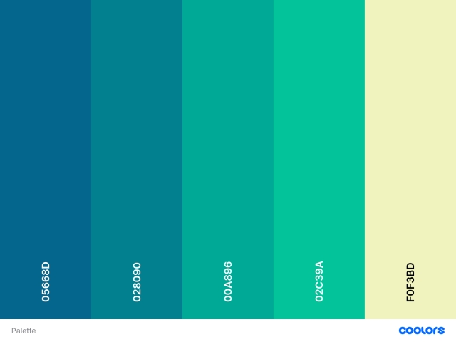

Color's Palette:
The palette of colors that I have chosen is the following. For more information check also the original source at Coolors.co

The palette of colors that I have chosen is the following. For more information check also the original source at Coolors.co